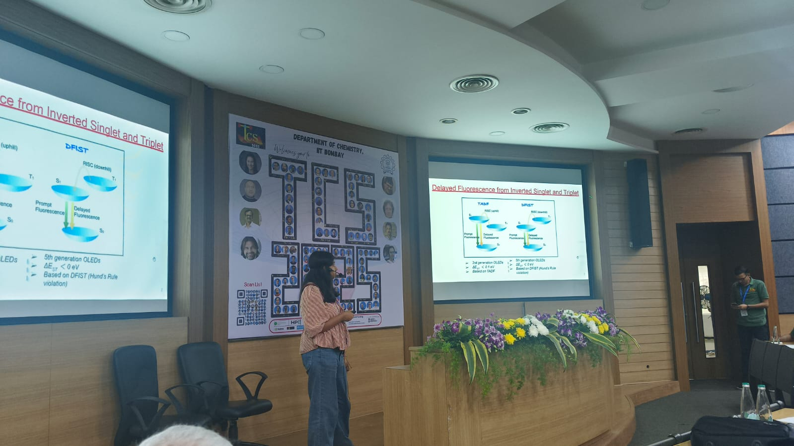
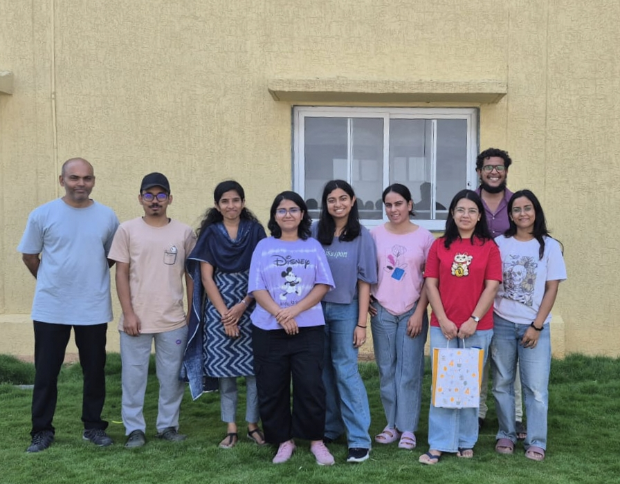
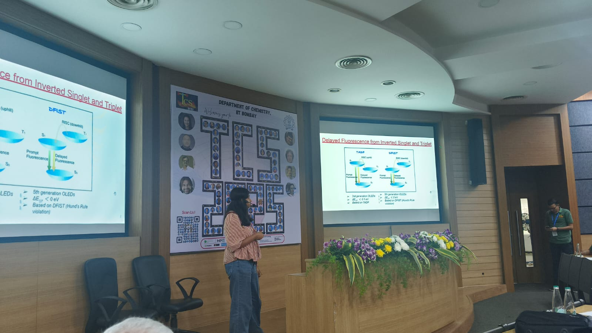
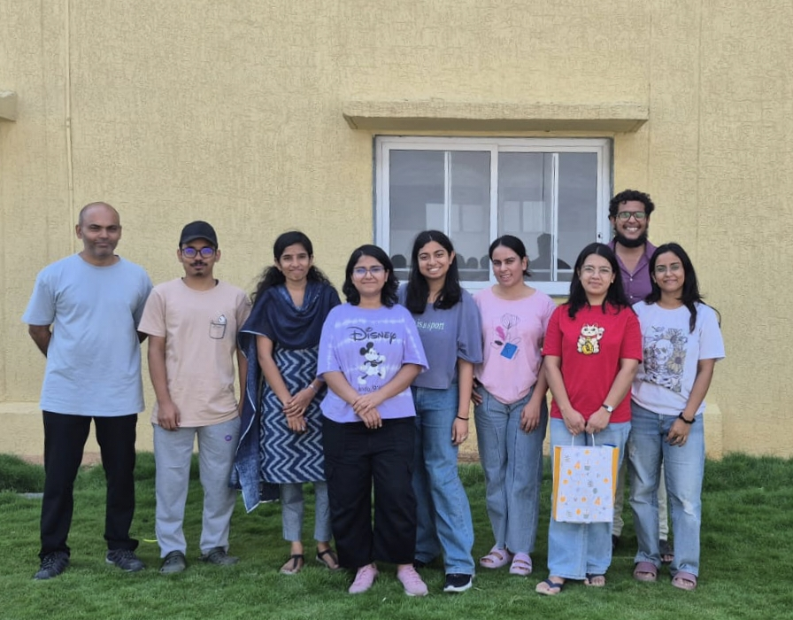

About Me
I am a PhD student at TIFR Hyderabad working on excited-state electronic structure, violations of Hund’s rule, and data-driven molecular discovery. My research bridges quantum chemistry with chemical space exploration.
Publications
-
PCCP Hot Article
Resilience of Hund’s Rule in the Chemical Space of Small Organic Molecules
Physical Chemistry Chemical Physics, 26, 14505 (2024) · DOI -
Influence of Pseudo-Jahn–Teller Activity on the Singlet–Triplet Gap of Azaphenalenes
Physical Chemistry Chemical Physics, 26, 26723 (2024) · DOI -
Unlocking Inverted Singlet–Triplet Gap in Alternant Hydrocarbons with Heteroatoms
Chemical Science, 16, 14392–14407 (2025) · DOI -
Leveraging the Bias–Variance Tradeoff in Quantum Chemistry for Accurate Negative Singlet–Triplet Gap Predictions
Journal of Computational Chemistry, 46, e70228 (2025) · DOI -
Insights into Symmetry and Substitution Patterns Governing Singlet–Triplet Energy Gap in the Chemical Space of Azaphenalenes
Chemistry – A European Journal, accepted (2026) · DOI
Posters & Talks
- In Pursuit of Hund’s-Rule Violating Organic Molecules — AOSC 2025 Best Poster Award
- A Tale of True & False Positives in Molecular Discovery — ChemSci 2024
- Unlocking Inverted Singlet–Triplet Gap in Alternant Systems — SDMC 2025
- Oral: TIFR Annual Chemistry Conference (2025)
Hobbies & Interests
📖 Reading
🎨 Design & aesthetics
🎤 Singing
🎬 Thriller movies
🎯 Carrom
🌍 Exploring new places
Moments & Memories
 


